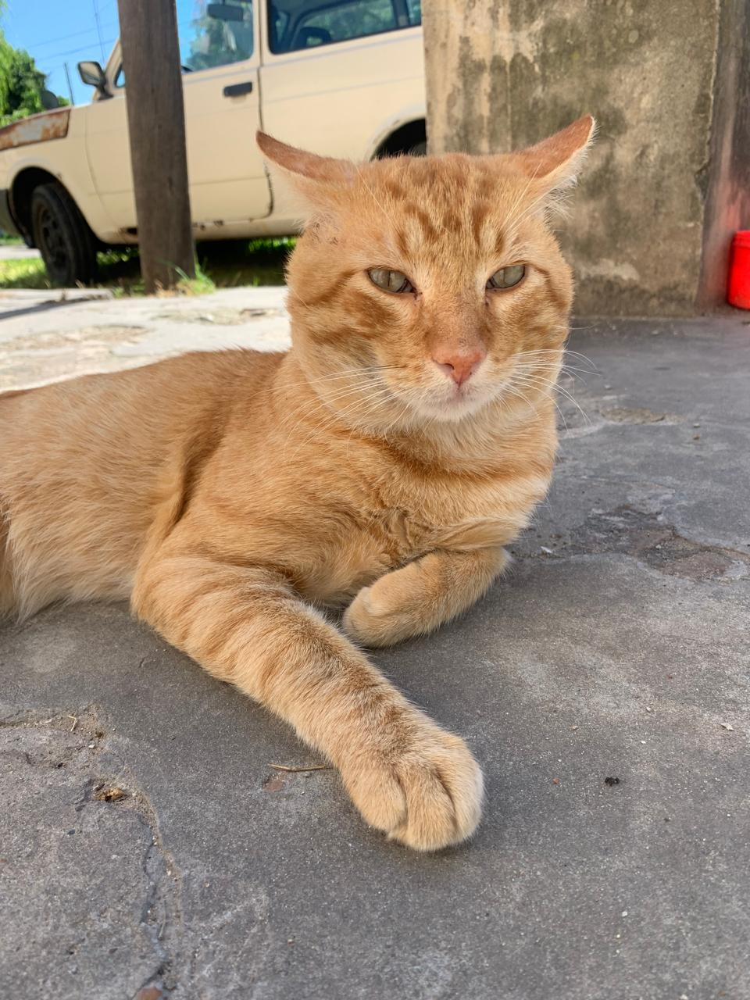
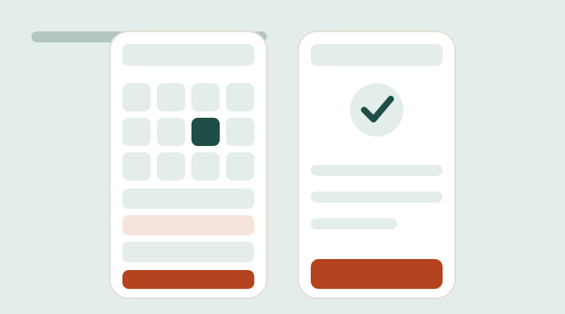
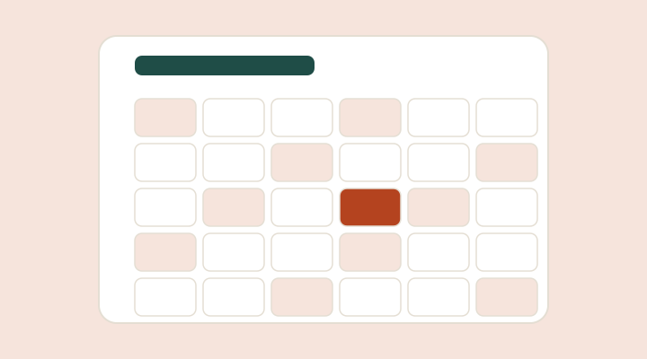
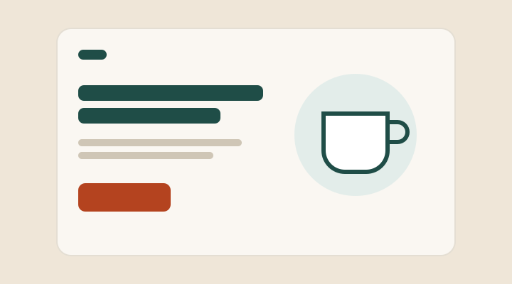
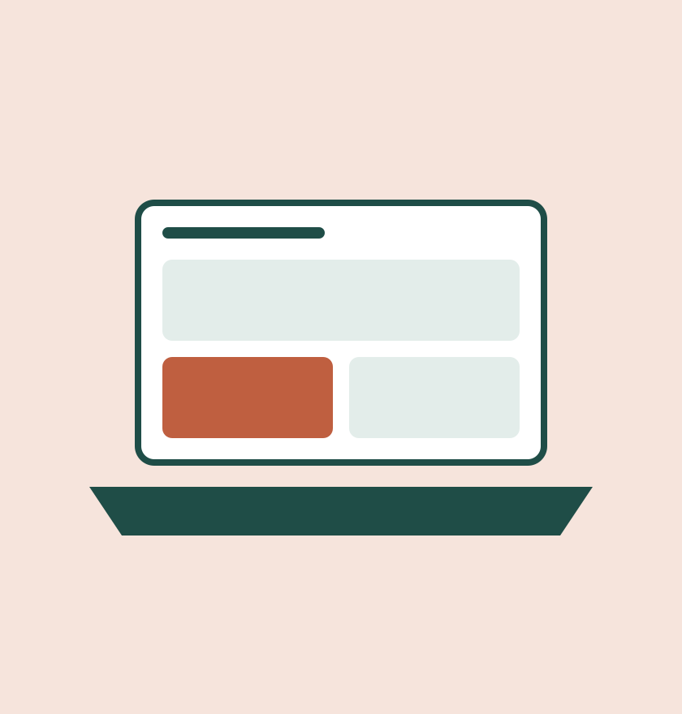

Diseño UX
Investigación, benchmark, wireframes y tests de usabilidad.
Disponible para pasantías · Argentina (GMT-3)
Diseñadora UX/UI junior y maquetadora front-end
Diseño interfaces claras y accesibles, y las llevo a código.

Investigación, benchmark, wireframes y tests de usabilidad.
Sistemas de diseño, tipografía y color con foco en consistencia.
HTML semántico, CSS responsive y accesibilidad.
Versionado, despliegue y auditoría de calidad.

Rediseño de la app de turnos de una clínica veterinaria, de la investigación al prototipo validado.
Resultado: tareas completadas del 40% al 90%.
Ver caso de estudio
Sistema de reserva de salas de una biblioteca universitaria con wireframes y flujo completo.
Aprendizaje: la jerarquía visual guía las decisiones.
Ver en Figma
Landing y mini design system para una cafetería de barrio, maquetada con HTML y CSS.
Resultado: Lighthouse 95+ en las 4 métricas.
Ver repositorio2024 – hoy
FCyT · Sede Concepción del Uruguay
2025
Formación online
2025
ONG local
Soy estudiante de Sistemas de Información en la FCyT y me dedico al diseño UX/UI y a la maquetación front-end. Me gusta entender a las personas antes de dibujar pantallas, y cuidar que lo diseñado llegue igual a código.
Investigo antes de diseñar.
Cada elemento tiene una razón.
Contraste, teclado y semántica desde el inicio.

Estoy buscando mi primera pasantía en diseño de producto. Escribime y te respondo en menos de 48 horas.
Escribime por email